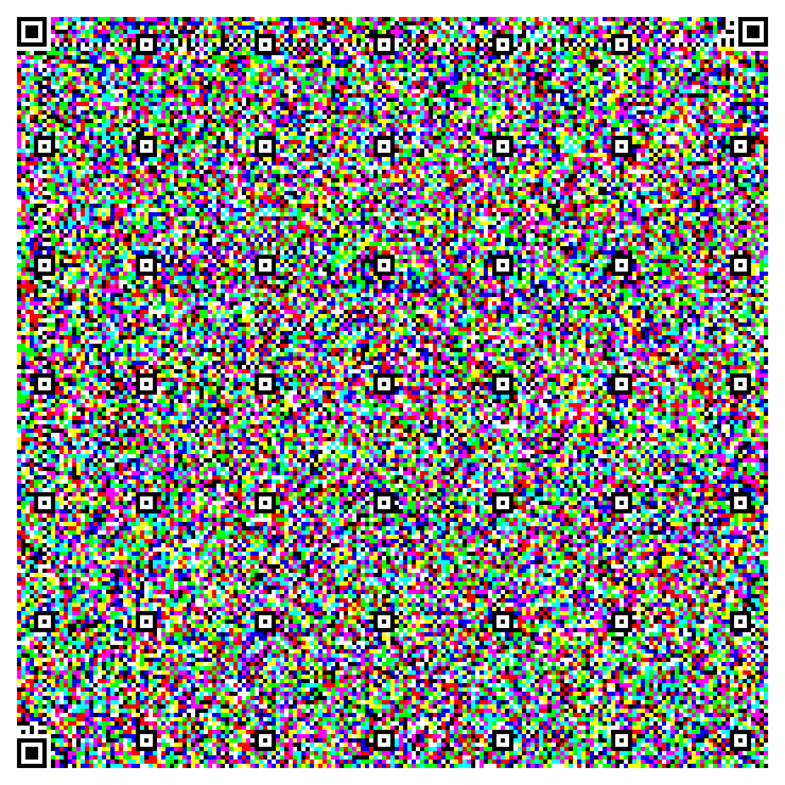

One code, three QRs stacked in Red/Green/Blue = 3× the data (~8.6 KB). Your browser splits the colors back out and plays the film — no server.

↤ this is the color code. The colors aren't decoration — each RGB channel is a full separate QR.